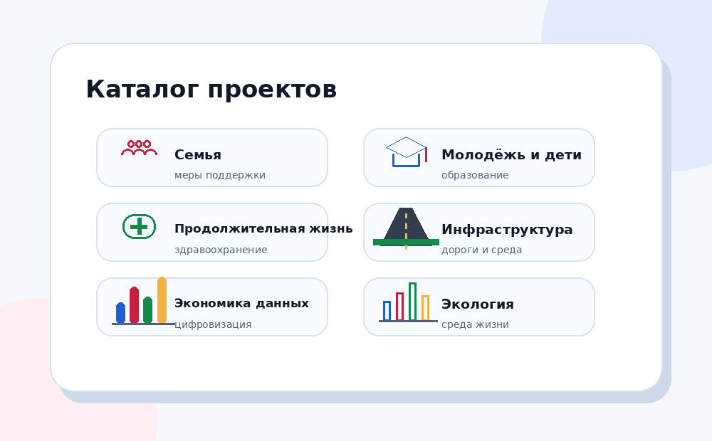

Выберите интересующую сферу и посмотрите, какие проблемы, меры и данные с ней связаны.

Поддержка семей, детства, старшего поколения, семейных ценностей и инфраструктуры.
Профилактика, диспансеризация, медицинская помощь, технологии сбережения здоровья.
Школы, колледжи, университеты, молодежные инициативы, кадры и развитие навыков.
Жильё, дороги, транспорт, общественные пространства, качество среды.
Предпринимательство, производительность, автоматизация, цифровые данные, промышленность.
Отходы, водные объекты, снижение загрязнения, экологическая безопасность.
Выберите то, что кажется наиболее важным. Сайт подскажет, с какого раздела начать.